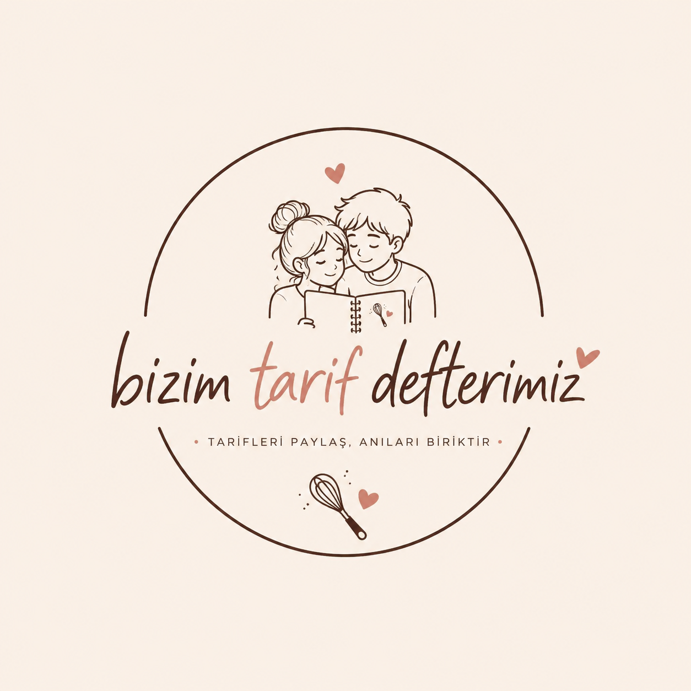

Artık sitemiz değişişyor hayatım, bundan sonra burada instagram ve tiktokta bulduğum yemek tariflerini paylaşıcam.
Bu kısım instagrama ait hayatım merak etme linkleri de koyacağııım.
Karpuzlu Yaz Salatası, sıcak bir yaz gününde lezzetli ve sağlıklı bir yemek olabilir. Malzemeleri bir kaseye alıp karıştırın. Karpuzlu Yaz Salatası
Buz hariç tüm malzemeyi blenderdan geçirip süzün. Bol buz ilave ettiğimiz bardağa aktarın. Ödem Limonatası
Blenderdan geçirip yağlı kağıt üzerine yayıp 180 derecede 20-25 dk kontrollü pişirin. Üzerine salça,sebzeleri ve kaşar ekleyip 5 dk daha pişirin. Proteinli Unsuz Pizza
Karıştırma kabına 1 su bardağı ince çekilmiş cevizi ekleyin, unu, pudra şekerini ekleyip biraz karıştırın en son sıvı yağını alıp el sürmeden iyice yedirin, tepsiye yağlı kağıt açın ve fırınınızı 150 dereceye getirip iyice ısıtın, sıcak fırına atmalısınız, kurabiye hamurunuzu dondurma kaşığı ya da istediğiniz şekli verin, tepsiye dizdikten sonra fırına atın bu sırada fırını 180 dereceye getirin ve 7 dakika pişirin, üstü vs kızarmıyor ama toplu bir hamur oluyor fırından çıkardıktan sonra hemen dokunmayın çabuk ufalanan bir kurabiye olduğundan iyice içini çekmesini bekleyin, tamamen soğuyup dinlendinden sonra üzerini istediğiniz gibi süsleyin ve kurabiyeniz hazır. Balayı Kurabiyesi